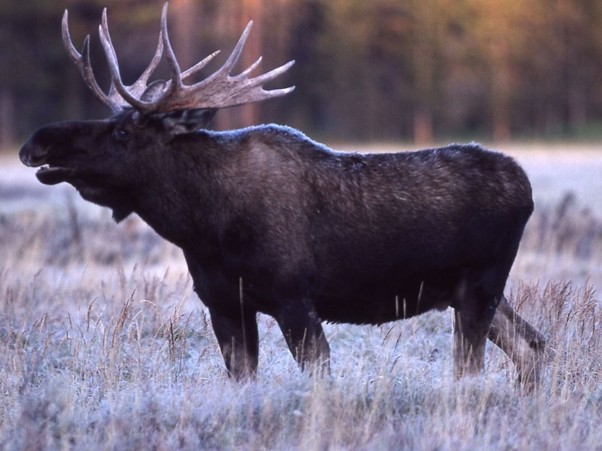

- 
- О себе
- Резюме
- Портфолио
- Контакты
Немного про лосей
Могучие лоси, вооружённые массивными рогами — звери не только величественные и грациозные, но и грозные, особенно если их разозлить. Родственные оленям лоси широко распространены на территории России. Эти могучие животные плохо переносят жару, но неплохо себя чувствуют даже в условиях Севера. Люди неоднократно пытались их приручить и вывести домашних лосей, но пока в этом не преуспели. Впрочем, в дикой природе эти создания чувствуют себя прекрасно. Особенной опасности для человека они не представляют, если соблюдать осторожность, но в период спаривания они способны убить каждого, кто встанет у них на пути.
Интересные факты про лосей
- Вес крупных лосей нередко превышает 600 кг.
- Больше всего в мире лосей водится в России и в Канаде.
- На свете рога есть у разных млекопитающих, но у лосей они являются крупнейшими в мире. При размахе до 1,8 метра они весят до 20-30 кг.
- Рогами могут похвастать только самцы, у самок их нет. Но на зиму от рогов избавляются и самцы, обычно в ноябре-декабре, и обзаводятся ими заново только в апреле-мае.